Chapter 5 Analysis
The analysis component is where the elements in components 1-4 are combined to answer the question(s) of interest given current information and to quantify the value of potential further research. Our framework separates the analysis in three subcomponents: 05a Probabilistic analysis, _05b Deterministic analysis_and 05c Value of information analysis. For the Sick-Sicker case-study, we use all three subcomponents to conduct the CEA and to quantify the uncertainty of our decision. For procedures in the CEA, we rely on the R package dampack, which is available here: https://github.com/DARTH-git/dampack. To install dampack, please follow these instructions:
5.1 05a Probabilistic analysis
In this subcomponent, we evaluate decision uncertainty by propagating the uncertainty through the CEA using probabilistic sensitivity analysis (PSA). Until now we used the parameter values as described in Table 1.1. However, we are uncertain about these values. Most of these input parameters are defined by probability distribution as described in Table 5.1.
| Parameter | R name | Distribution |
|---|---|---|
| Annual transition probabilities | ||
| - Disease onset (H to S1) | p_HS1 |
beta(30, 170) |
| - Recovery (S1 to H) | p_S1H |
beta(60, 60) |
| Annual costs | ||
| - Healthy individuals | c_H |
gamma(shape = 100, scale = 20) |
| - Sick individuals in S1 | c_S1 |
gamma(shape = 177.8, scale = 22.5) |
| - Sick individuals in S2 | c_S2 |
gamma(shape = 225, scale = 66.7) |
| - Additional costs of sick individuals treated in S1 or S2 | c.Trt |
gamma(shape = 73.5, scale = 163.3) |
| Utility weights | ||
| - Healthy individuals | u_H |
truncnorm(mean = 1, sd = 0.01, b = 1) |
| - Sick individuals in S1 | u_S1 |
truncnorm(mean = 0.75, sd = 0.02, b = 1) |
| - Sick individuals in S2 | u_S2 |
truncnorm(mean = 0.50, sd = 0.03, b = 1) |
| Intervention effect | ||
| - Utility for treated individuals in S1 | u_Trt |
truncnorm(mean = 0.95, sd = 0.02, b = 1) |
In a PSA we sample the input parameter values from these distributions and we then run the model at each sample. In the file 05a_probabilistic_analysis_functions.R we created a single function, called generate_psa_params. This function generates a PSA dataset for all the CEA input parameters. We specify the number of PSA samples via the n_sim argument. The function also accepts specifying a seed to allow reproducibility of the results.
## function (n_sim = 1000, seed = 20190220)
## {
## if (!is.numeric(n_sim) || length(n_sim) != 1 || is.na(n_sim) ||
## n_sim < 1) {
## stop("'n_sim' must be a single number of at least 1")
## }
## n_sim <- as.integer(n_sim)
## if (!is.null(seed)) {
## set.seed(seed)
## }
## n_post <- nrow(m_calib_post)
## if (n_sim == n_post) {
## m_calib_post_samp <- m_calib_post
## }
## else {
## if (n_sim > n_post) {
## warning("'n_sim' (", n_sim, ") is larger than the posterior sample of ",
## "the calibrated parameters (", n_post, "), so posterior draws ",
## "are resampled with replacement. Rerun the calibration with a ",
## "larger 'B.re' to obtain n_sim distinct draws.",
## call. = FALSE)
## }
## v_rows_post <- sample.int(n = n_post, size = n_sim, replace = n_sim >
## n_post)
## m_calib_post_samp <- m_calib_post[v_rows_post, , drop = FALSE]
## }
## rownames(m_calib_post_samp) <- NULL
## df_psa_params <- data.frame(m_calib_post_samp, p_HS1 = rbeta(n_sim,
## 30, 170), p_S1H = rbeta(n_sim, 60, 60), c_H = rgamma(n_sim,
## shape = 100, scale = 20), c_S1 = rgamma(n_sim, shape = 177.8,
## scale = 22.5), c_S2 = rgamma(n_sim, shape = 225, scale = 66.7),
## c_Trt = rgamma(n_sim, shape = 73.5, scale = 163.3), c_D = 0,
## u_H = truncnorm::rtruncnorm(n_sim, mean = 1, sd = 0.01,
## b = 1), u_S1 = truncnorm::rtruncnorm(n_sim, mean = 0.75,
## sd = 0.02, b = 1), u_S2 = truncnorm::rtruncnorm(n_sim,
## mean = 0.5, sd = 0.03, b = 1), u_D = 0, u_Trt = truncnorm::rtruncnorm(n_sim,
## mean = 0.95, sd = 0.02, b = 1))
## return(df_psa_params)
## }
## <bytecode: 0x11e5cf6d0>
## <environment: namespace:darthpack>The function returns the df_psa_input dataframe with a PSA dataset of the input parameters. With this dataframe we can run the PSA to produce distributions of costs, effectiveness and NMB. The PSA is performed by the 05a_probabilistic_analysis.R script. As shown in the code below, the df_psa_input dataframe is used by the update_param_list function to generate the corresponding list of parameters for the PSA. For each simulation, we perfrom three steps. First, the list of parameters is updated by the update_param_list function. Second, the model is executed by the calculate_ce_out function using the updated parameter list and third, the dataframes df_c and df_e store the estimated cost and effects, respectively. The final part of this loop is to satisfy the modeler when waiting on the results, by displaying the simulation progress.
for(i in 1:n_sim){
l_psa_input <- update_param_list(l_params_all, df_psa_input[i, ])
df_out_temp <- calculate_ce_out(l_psa_input)
df_c[i, ] <- df_out_temp$Cost
df_e[i, ] <- df_out_temp$Effect
# Display simulation progress
if(i/(n_sim/10) == round(i/(n_sim/10), 0)) {
cat('\r', paste(i/n_sim * 100, "% done", sep = " "))
}
}We can plot the results using the plot function from dampack. Figure 5.1 shows the CE scatter plot with the joint distribution of costs and effects for each strategy and their corresponding 95% confidence ellipse.
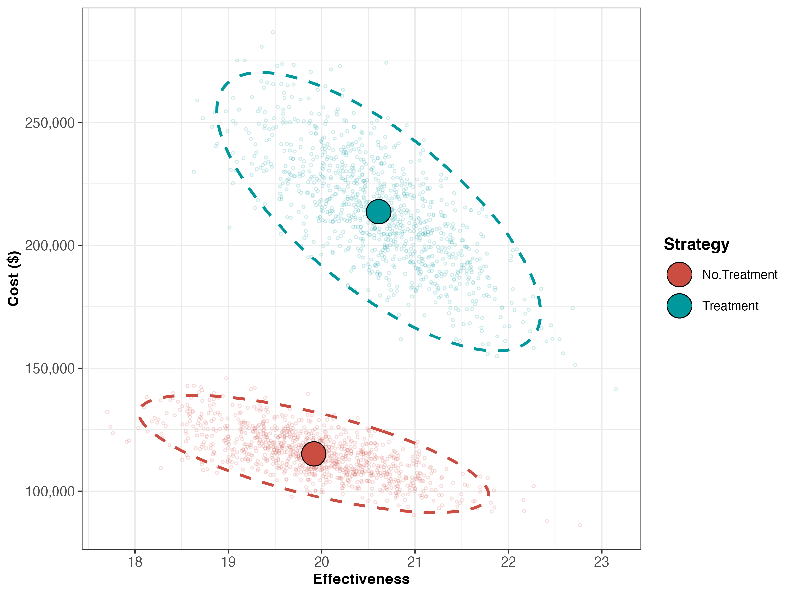
Figure 5.1: The cost-effectiveness plane graph showing the results of the probabilistic sensitivity analysis for the Sick-Sicker case-study.
| Strategy | Cost | Effect | Inc_Cost | Inc_Effect | ICER |
|---|---|---|---|---|---|
| No.Treatment | 115178.1 | 19.91475 | NA | NA | NA |
| Treatment | 213684.8 | 20.60944 | 98506.7 | 0.694694 | 141798.7 |
Next, we perform a CEA using the previously used calculate_icers functions from dampack. Table 5.2 shows the results of the probabilistic CEA. In addition, we plot a cost-effectiveness plane with the frontier, the cost-effectiveness acceptability curves (CEACs) and frontier (CEAF), expected Loss curves (ELCs) (Figures 5.2 - 5.4) (Alarid-Escudero et al. 2019). Followed by creating linear regression metamodeling sensitivity analysis graphs (Figures 5.5 - 5.8)(Jalal et al. 2013). All generated figures are shown below and stored to the figs folder .
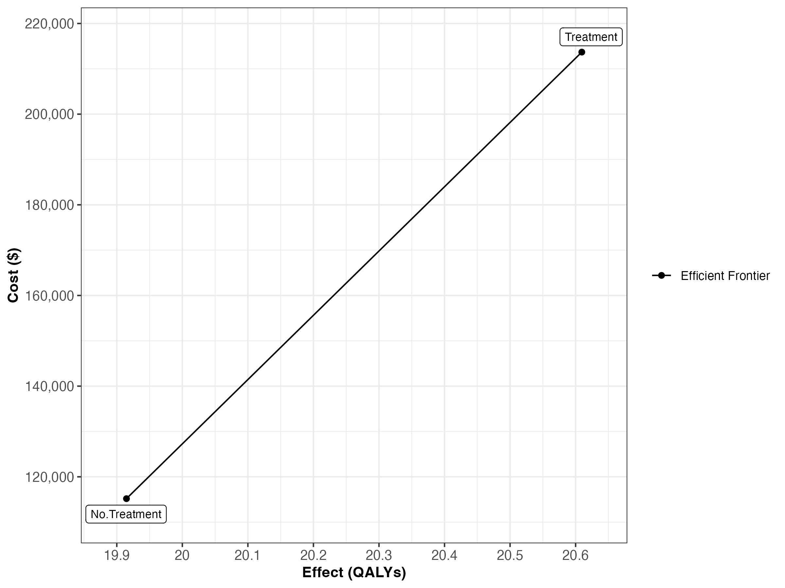
Figure 5.2: Cost-effectiveness frontier
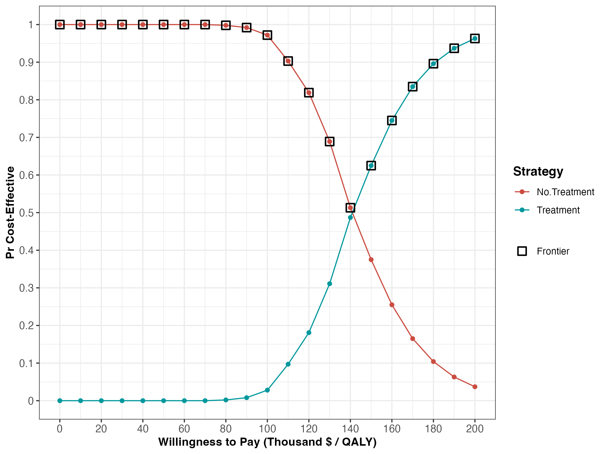
Figure 5.3: Cost-effectiveness acceptability curves (CEACs) and frontier (CEAF).
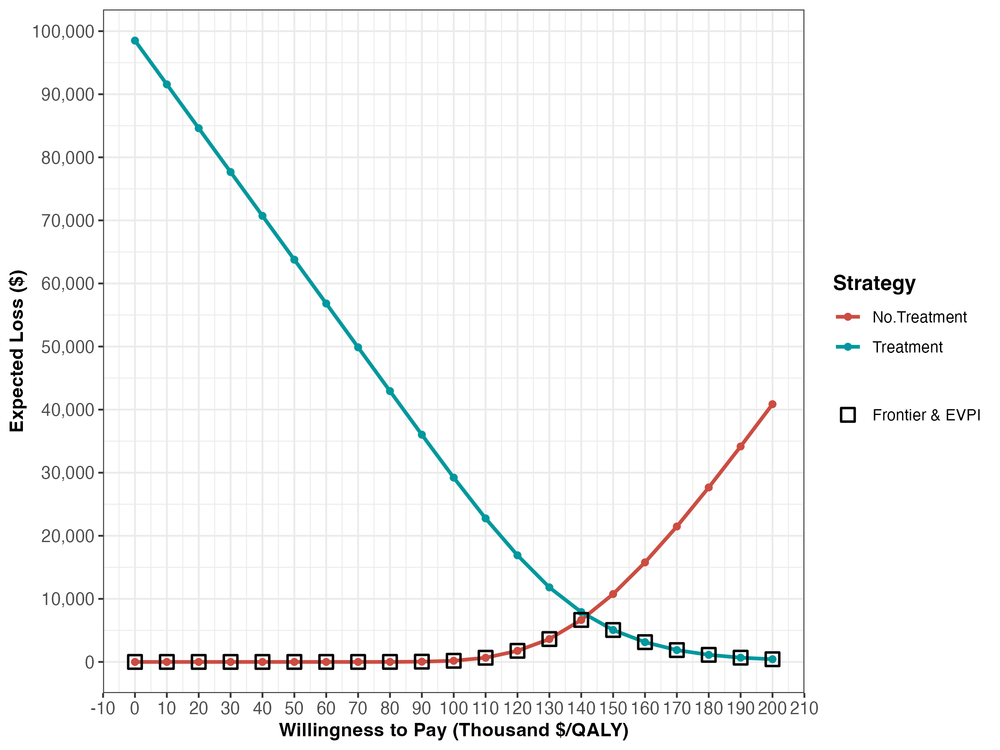
Figure 5.4: Expected Loss Curves.
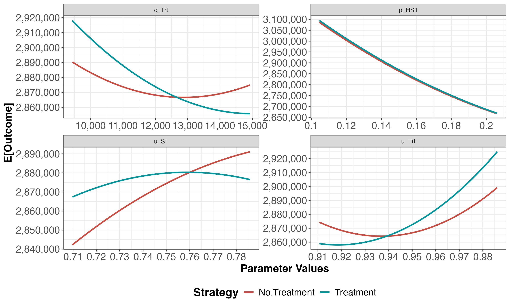
Figure 5.5: One-way sensitivity analysis (OWSA).
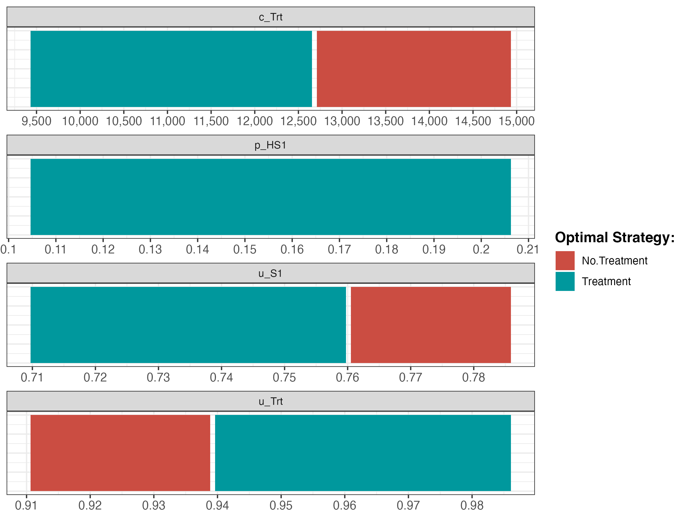
Figure 5.6: Optimal strategy with OWSA
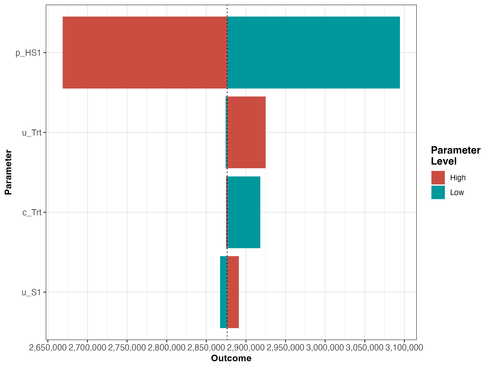
Figure 5.7: Tornado plot
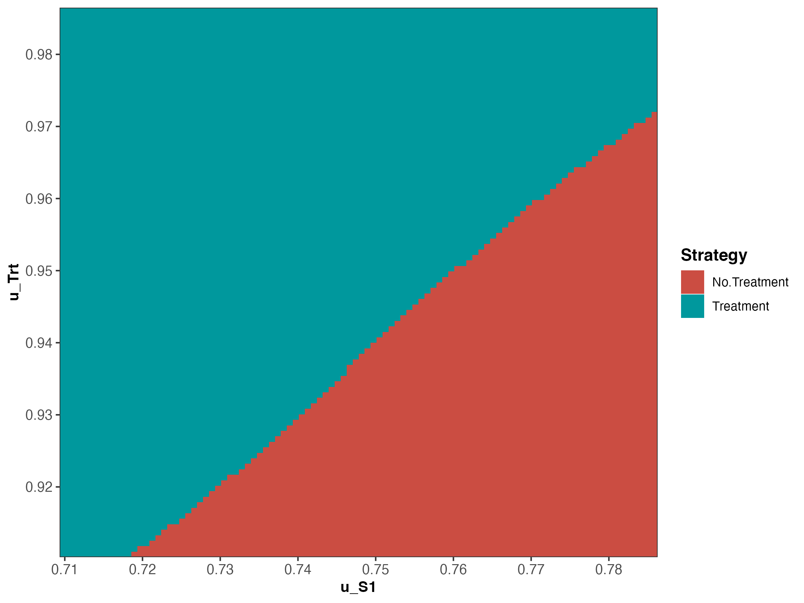
Figure 5.8: Two-way sensitivity analysis (TWSA).
5.2 05b Deterministic analysis
In this subcomponent, we perform a deterministic CEA, followed by some deterministic sensitivity analysis, including one-way, two-way and tornado sensitivity analyses. The function script of this subcomponent, 05b_deterministic_analysis_function.R, contains the function calculate_ce_out. This function calculates costs and effects for a given vector of parameters using a simulation model. We need to run our simulation model using the calibrated parameter values, but the list we created in component 01 (1) still contain the placeholder values for the calibrated parameters. This means we need to update these values by the calibrated values stored in the vector v_calib_post_map. The function update_param_list updates the list of parameters with new values for some specific parameters.
## function (l_params_all, params_updated, allow_new = FALSE)
## {
## if (is.null(names(params_updated)) || any(names(params_updated) ==
## "")) {
## stop("All elements of 'params_updated' must be named after the parameter ",
## "they update")
## }
## if (typeof(params_updated) != "list") {
## params_updated <- split(unname(params_updated), names(params_updated))
## }
## v_names_unknown <- setdiff(names(params_updated), names(l_params_all))
## if (length(v_names_unknown) > 0 && !allow_new) {
## stop("The following parameter(s) are not in 'l_params_all': ",
## paste(v_names_unknown, collapse = ", "), ". Check the spelling, or set allow_new = TRUE to add them.")
## }
## l_params_all <- modifyList(l_params_all, params_updated)
## return(l_params_all)
## }
## <bytecode: 0x11dd97980>
## <environment: namespace:darthpack>The first argument of the function, called l_params_all, is a list with all the parameters of decision model. The second argument, params_updated, is an object with parameters for which values need to be updated. The function returns the list l_params_all with updated values.
In the 05b_deterministic_analysis.R script we execute the update_param_list function for our case-study, resulting in the list l_params_basecase where the placeholder values for p_S1S2, hr_S1 and hr_S2 are replaced by the calibration estimates.
We use this new list as an argument in the calculate_ce_out function. In addition, we specify the willingness-to-pay (WTP) threshold value using the n_wtp argument of this function. This WTP value is used to compute a net monetary benefit (NMB) value. If the user does not specify the WTP, a default value of $100,000/QALY will be used by the function.
df_out_ce <- calculate_ce_out(l_params_all = l_params_basecase,
n_wtp = 150000)
print.function(calculate_ce_out) # print the function## function (l_params_all = load_all_params(), n_wtp = 1e+05)
## {
## with(as.list(l_params_all), {
## v_dwc <- 1/((1 + d_c)^(0:(n_t)))
## v_dwe <- 1/((1 + d_e)^(0:(n_t)))
## l_model_out_no_trt <- decision_model(l_params_all = l_params_all)
## l_model_out_trt <- l_model_out_no_trt
## m_M_no_trt <- l_model_out_no_trt$m_M
## m_M_trt <- l_model_out_trt$m_M
## v_u_no_trt <- c(u_H, u_S1, u_S2, u_D)
## v_u_trt <- c(u_H, u_Trt, u_S2, u_D)
## v_c_no_trt <- c(c_H, c_S1, c_S2, c_D)
## v_c_trt <- c(c_H, c_S1 + c_Trt, c_S2 + c_Trt, c_D)
## v_tu_no_trt <- m_M_no_trt %*% v_u_no_trt
## v_tu_trt <- m_M_trt %*% v_u_trt
## v_tc_no_trt <- m_M_no_trt %*% v_c_no_trt
## v_tc_trt <- m_M_trt %*% v_c_trt
## tu_d_no_trt <- t(v_tu_no_trt) %*% v_dwe
## tu_d_trt <- t(v_tu_trt) %*% v_dwe
## tc_d_no_trt <- t(v_tc_no_trt) %*% v_dwc
## tc_d_trt <- t(v_tc_trt) %*% v_dwc
## v_tc_d <- c(tc_d_no_trt, tc_d_trt)
## v_tu_d <- c(tu_d_no_trt, tu_d_trt)
## v_nmb_d <- v_tu_d * n_wtp - v_tc_d
## df_ce <- data.frame(Strategy = v_names_str, Cost = v_tc_d,
## Effect = v_tu_d, NMB = v_nmb_d)
## return(df_ce)
## })
## }
## <bytecode: 0x11d06df58>
## <environment: namespace:darthpack>After calculating the discount weights, this function runs the simulation model using the previously described function decision_model in the 02_simulatiomn_model_function.R script. Inside the function calculate_ce_out, the simulation model is run for both the treatment, l_model_out_trt, and no treatment, l_model_out_no_trt, strategies of the Sick-Sicker model. Running it for both treatment strategies is done for illustration purposes. In this case-study, the resulting cohort traces are identical and we could have executed it only once.
In the second part of the function we create multiple vectors for both the cost and effects of both strategies. These vectors multiply the cohort trace to compute the cycle-specific rewards. This results in vectors of total costs (v_tc) and total effects (v_tu) per cycle. By multiplying these vectors with the vectors with the discount weights for costs (v_dwc) and effects (v_dwe) we get the total discounted mean costs (tc_d_no_trt and tc_d_trt) and QALYs (tu_d_no_trt and tu_d_trt) for both strategies. These values are used in the calculation of the NMB. Finally, the total discounted costs, effectiveness and NMB are combined in the dataframe df_ce. The results for our case-study are shown below.
## Strategy Cost Effect NMB
## 1 No Treatment 115244.8 20.0233 2888250
## 2 Treatment 214165.8 20.7226 2894224This dataframe of CE results can be used as an argument in the calculate_icers function from the dampack package to calculate the incremental cost-effectiveness ratios (ICERs) and noting which strategies are weakly and strongly dominated. Table 5.4 shows the result of the deterministic CEA.
df_cea_det <- calculate_icers(cost = df_out_ce$Cost,
effect = df_out_ce$Effect,
strategies = l_params_basecase$v_names_str)| Strategy | Cost | Effect | Inc_Cost | Inc_Effect | ICER |
|---|---|---|---|---|---|
| No Treatment | 115244.8 | 20.0233 | NA | NA | NA |
| Treatment | 214165.8 | 20.7226 | 98921.01 | 0.6992988 | 141457.4 |
Finally, Figure 5.9 shows the cost-effectiveness frontier of the CEA.
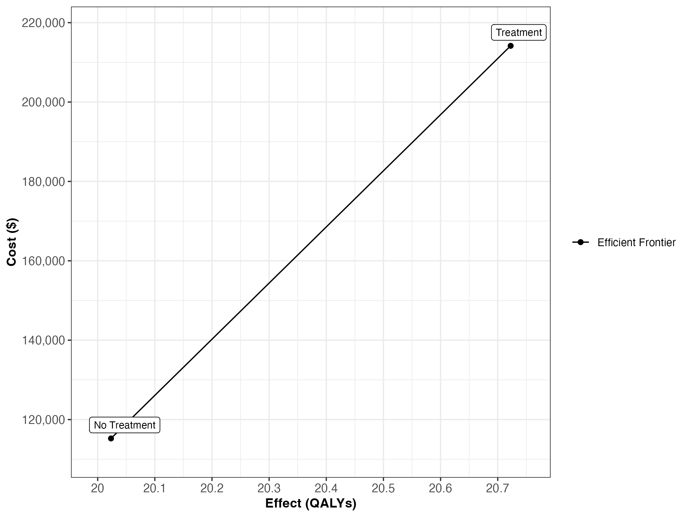
Figure 5.9: Cost-effectiveness frontier.
We then conduct a series of deterministic sensitivity analysis. First, we conduct a one-way sensitivity analysis (OWSA) on the variables c_Trt, p_HS1, u_S1 and u_Trt and a two-way sensitivity analysis (TWSA) using the owsa_det and twsa_det functions. We use the output of these functions to produce different SA plots, such as OWSA tornado, one-way optimal strategy and TWSA plots (Figures 5.10 - 5.13).
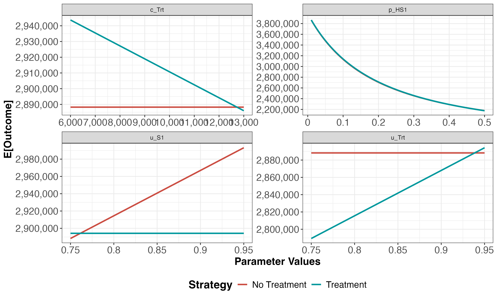
Figure 5.10: One-way sensitivity analysis results
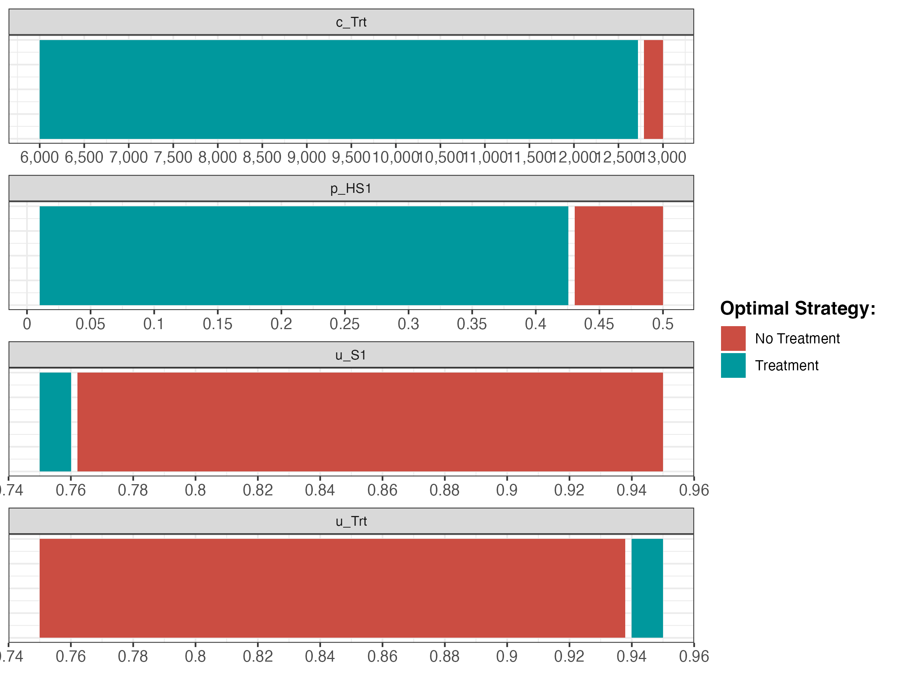
Figure 5.11: The optimal strategy with OWSA
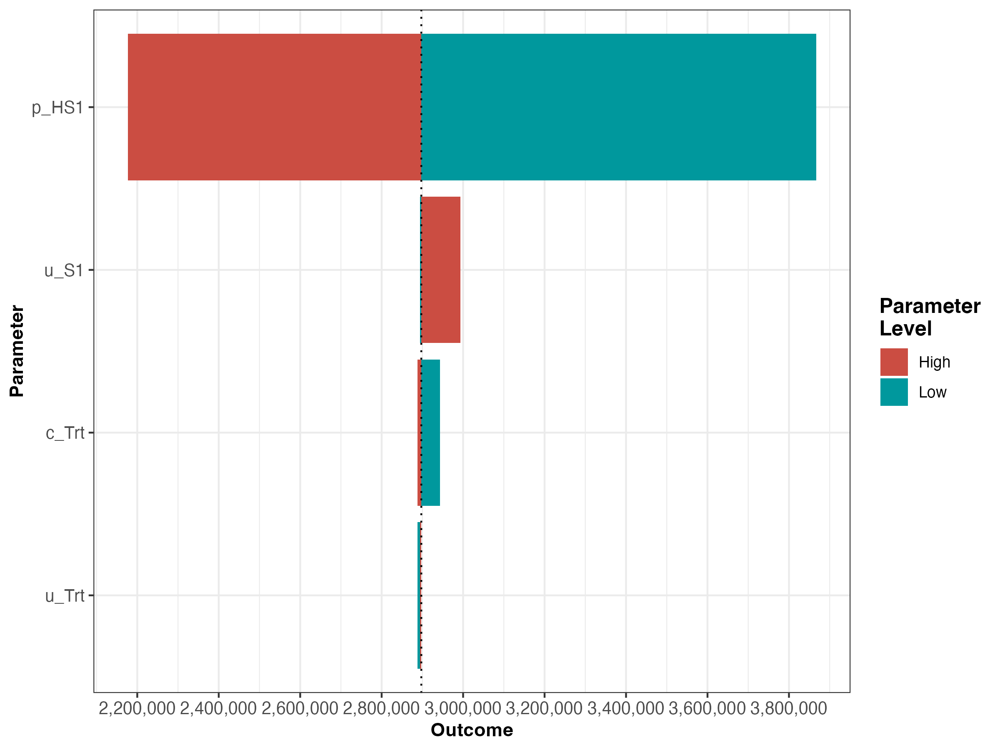
Figure 5.12: The tornado plot
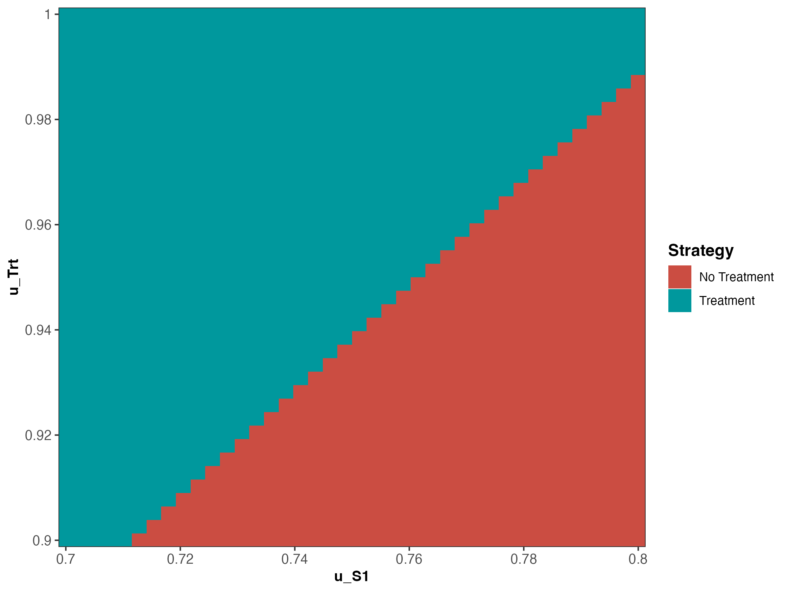
Figure 5.13: Two-way sensitivity results.
5.3 05c Value of information
In the VOI component, the results from the PSA generated in the probabilistic analysis subcomponent are used to determine whether further potential research is needed. We use the calc_evpi function from the dampack package to calculate the expected value of perfect information (EVPI). Figure 5.14 shows the EVPI for the different WTP values.
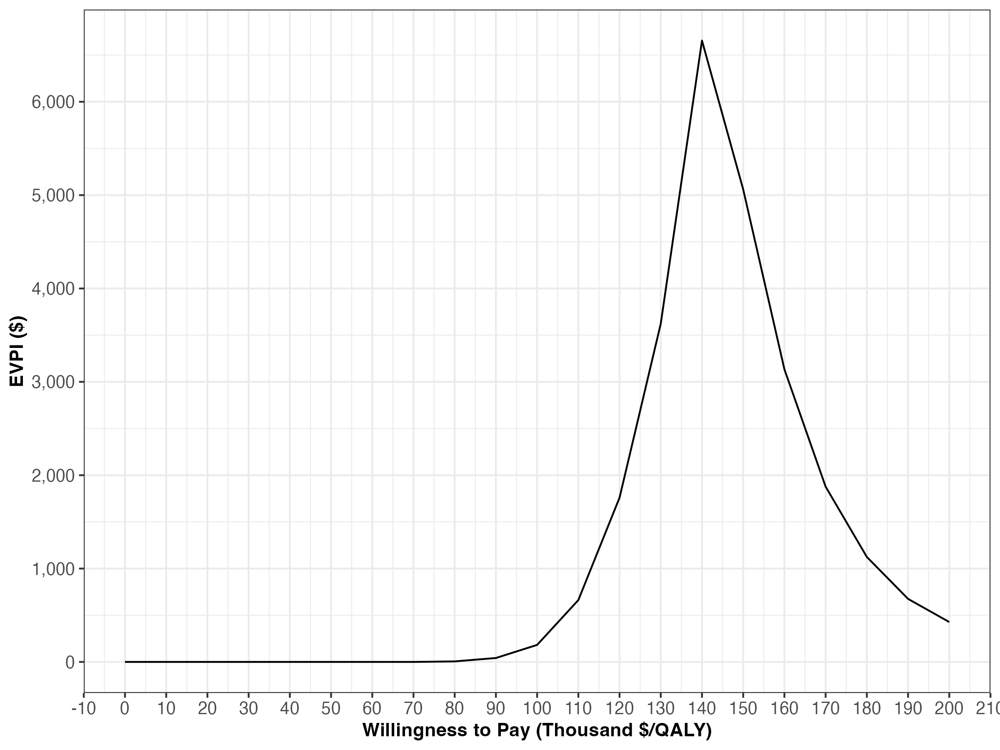
Figure 5.14: Expected value of perfect information